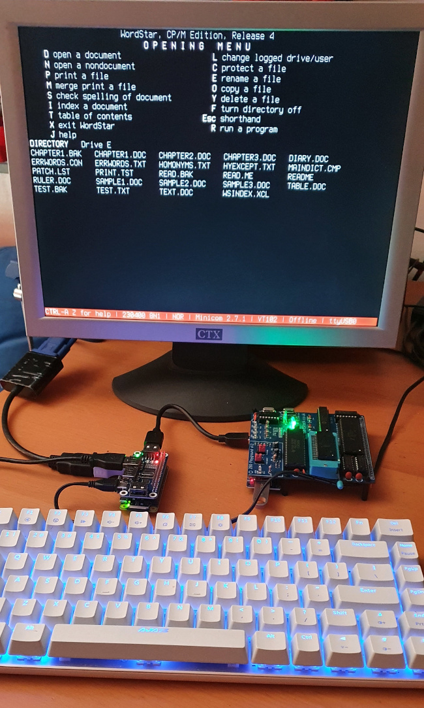

Using a Pi Zero and throw-away parts to provide a serial terminal for retrocomputing projects
 Many retrocompting projects are designed to be used with a serial terminal.
I've recently rediscovered the joys of programming for CP/M, using a
Z80 playground
single-board computer. This is a relatively simple Z80 board, with
a USB-serial connection to a terminal. Similar products are the
Z80-MBC2 and the RC2014.
Many retrocompting projects are designed to be used with a serial terminal.
I've recently rediscovered the joys of programming for CP/M, using a
Z80 playground
single-board computer. This is a relatively simple Z80 board, with
a USB-serial connection to a terminal. Similar products are the
Z80-MBC2 and the RC2014.
It's easy, of course, to emulate a terminal using a desktop workstation, but more authentic to use a dedicated serial terminal. This is particularly the case if you want to build a complete, self-contained piece of equipment. Original VT52-style terminals are expensive, and difficult to transport because they use CRTs. Small VGA and HDMI monitors, however, are dirt cheap -- they are almost considered trash -- as are USB keyboards. This article is about using a Raspberry Pi Zero with a custom Linux to convert a cheap monitor and keyboard into a serial terminal.
This isn't the only way to provide a dedicated serial terminal, naturally. Another popular method is to use an ESP32-based microcontroller with a built-in VGA, like this one. It certainly should be possible to use a Raspberry Pi Pico microcontroller, although this seems at present to be work in progress. There are other microcontroller-based solutions, some of which are available only in the form of plans or kits.
There's a place for all these approaches, but I'm using the Pi Zero, for reasons of cost and convenience, as well as functionality. Plans and kits are little good to me: with my eyesight, fine soldering is not a practical proposition. I really want something that can just be used.
Note:
I should point out that I'm referring to the older, non-wifi, non-bluetooth Pi Zero, not the newer Pi Zero W. The Zero W will work, as will any of the "desktop" Raspberry Pi boards; but these are sledgehammer solutions to what is, in principle, a nut problem.
The Pi Zero
The Pi Zero is a single-board computer with a 1 GHz ARM CPU, about half the size of a credit card. It's designed to run Linux, and the vendors provide (so far as I know) no support for running any Linux other than the standard "desktop" Raspbian variety. That's not very appropriate here, as I will explain later, but it would work.
The Zero has no built-in network or wireless interfaces of any kind, which is an advantage in this application -- power consumption is low, and there is no boot-time delay initializing unnecessary hardware. The single-unit price in the UK is about £4.50 -- cheaper than an ESP32 board with VGA (but you might need a USB hub, which adds to the price -- see below).
The Zero has an HDMI output, using a mini-HDMI connection. If you want to connect a regular HDMI monitor, you'll need a mini-HDMI adapter or cable. Alternatively, for real 1980s authenticity, you could use a monitor with composite video input. The Zero has a composite video output but, to use it, you'll need to solder to two tiny PCB pads on the board.
The Pi Zero doesn't have a lot of RAM, or a real-time clock, or a multi-core CPU, or any other such luxuries. Its only storage is a micro-SD card slot. This minimalism is ideal for this application.
USB connection
My Z80 board has a USB serial connection, so it's convenient to use a USB port on the Pi Zero for the serial connection. I also want to be able to use a USB keyboard. I can't fit two USB plugs into the Zero's single socket, so some sort of USB hub is required.
Of course, I could use a direct UART-to-UART connection between the Pi Zero and the Z80 board, and bypass the USB altogether. This would obviate the need for the USB hub, but instead I'd need level shifters because the Pi UART uses 3.3V logic, while the Z80 uses 5V. So there's little to be gained or lost either way, in terms of cost or complexity. The best solution might depend on what parts you happen to have laying around.
I'm using an attached USB hub board, which makes a neat, cable-free attachment (see photo below). This board requires connection to the GPIO pins of the Pi Zero, so you'll need to solder a header to the GPIO, or buy a device with the pins already soldered (which adds a few quid to the price). The hub itself costs about £9 -- twice the price of the Pi Zero itself.
The Z80 board can be powered using its USB serial connection, so little additional wiring is required.
Linux issues
The Pi Zero is designed to run Linux, and there's little documentation or support for doing anything else. The only supported Linux is really intended for desktop-like installations -- it takes a long time to boot, even on a "full-size" Raspberry Pi, usually to a graphical desktop. In addition, it uses a read/write filesystem -- which is entirely appropriate for a desktop Linux -- that necessitates a careful shutdown procedure. If the regular Pi Linux is not shut down cleanly, it's easy to end up with a corrupted SD card. What we need for the serial terminal application is a Linux that is completely read-only, boots directly to a terminal emulator (e.g., Minicom), and is shut down by switching the power off. Ideally, boot time should be less than a few seconds.
It would probably be possible, in theory, to implement a terminal emulator that runs on the Pi Zero's bare metal. However, implementing a complete USB stack and HDMI framebuffer does not sound like a five-minute job. So, although Linux is not very helpful for this application, it seems easier to optimize Linux for the task, than to code everything from scratch.
Although it's essentially undocumented, it's not difficult to create a Pi Zero Linux that will boot to a shell, and not start any services. Getting from that point to a read-only Linux that is capable of running Minicom is not particularly easy.
Elsewhere on this site I describe in detail the steps needed to build a complete, read-only Linux. I can't distribute the Linux firmware as a binary, both for legal reasons and because it's too large. However, in my GitHub repository I have a set of scripts (for Linux) that will build an SD card image by downloading the necessary components from the Raspberry Pi repositories, and configuring the boot process appropriately.
I should stress that you don't need a custom Linux to make this application work; you could use one of the many lightweight Linux distributions that already exist, like DietPi. However, these are all really intended for desktop use; to get a five-second boot time and the ability to shut down safely by switching the power off, you need something non-mainstream.
Whichever Linux you use, it's worth bearing in mind that the Pi Zero HDMI output will not initialize, by default, unless a monitor is already connected and powered on. If you're building a custom piece of equipment, where the monitor and the Pi Zero are switched by the same power switch, you can't rely on the monitor starting up before the Zero. In that case, you'll need to hard-code the HDMI properties, so that the Zero can output the appropriate HDMI signal even before the monitor is ready. I'm using an old 1024x768 monitor, and the follow settings work for me:
hdmi_force_hotplug=1 hdmi_group=2 hdmi_mode=17
These settings are in config.txt in the boot partition of
the SD card. They are read by the firmware, not by Linux, so are
relevant to all Linux varieties. Of course, you might have to choose
parameters that are more appropriate for your monitor; they are documented
here.
Performance
On the desktop, the system works quite well. The photo below shows the Pi Zero, monitor, and Z80 Playground running WordStar 4. From power-on to a useable system takes about five seconds -- this does mean that the Z80 board starts much more quickly than the Pi Zero. The result is that I don't see its start-up messages. This problem could easily be solved by arranging for the Pi Zero to control power to the Z80 board by means of a relay or power transistor connected to the GPIO.

The next step is to fit all this into a neat enclosure.